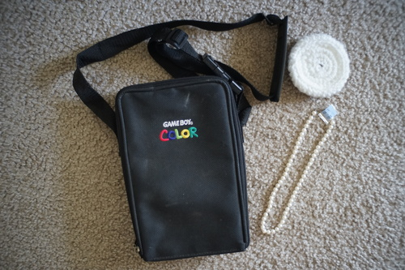

It's spring it's spring!!! Go outside and look at the flowers!!! The baby animals are out there too!! I saw two baby squirrels in my driveway snuggling. so cute ;a;
I wasn't sure about this jumper I made for Hina, but I got a suggestion from hors to make a turtleneck to go under it. Very good idea! I'd still like to add doll sized buttons to the front, but I dont have any small enough!
I packed Hina up for some hanami photos again and dragged her butt to the trees.


I went back just a couple days later to the same area for more photos. Gone! All of the blossoms were gone!! I took photos elsewhere anyway and survived every stare. Have I mastered the art of being stared at yet??


Liam got a matching shirt! I put the blonde wig on him and I think it's stuck?? I can't get it off!
This bush outside my house is very pretty but it keeps stabbing me!! How rude. I'm so mad at this dang flowering bush.


Congratulations to you, the reader, for surviving 21 dollfoto! The thrift store hasn't really sorted through their mass donations yet, but they're starting to pile up.
The strap was in perfect condition and has since disintegrated
It's so small it doesn't even fit around Grassy's head!
cute
The cashier hit the wrong button and I didn't notice until I got home!
That makes 3
This isn't YMO?!